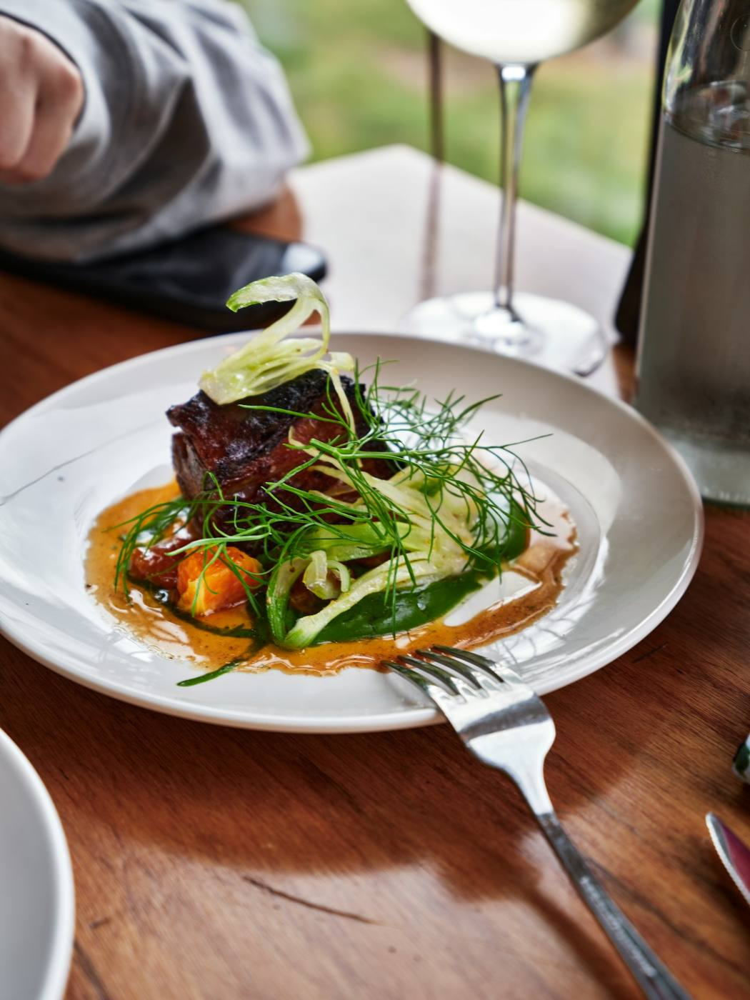
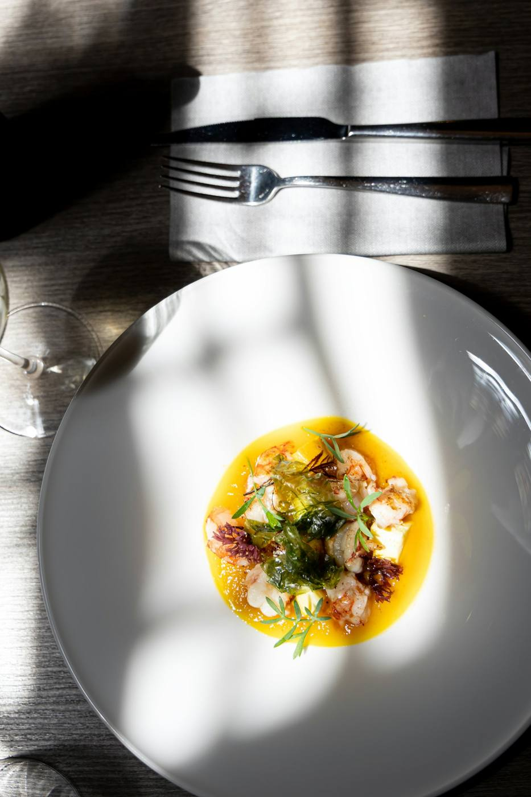

Restaurant, Concarneau
Une petite maison de ville au 4 rue Duquesne, à deux pas du port de plaisance. La carte suit le marché et les saisons.


Au Flaveur, la cuisine part du produit : une cuisine moderne, préparée à partir de produits frais et locaux, servie dans une petite maison de ville proche du port de plaisance.
La salle reste intime : pensez à réserver par téléphone, surtout le samedi soir et le dimanche midi.
| Lundi | Fermé |
| Mardi | 12h00 à 13h30 |
| Mercredi | 12h00 à 13h30 |
| Jeudi | 12h00 à 13h30 |
| Vendredi | 12h00 à 13h30 |
| Samedi | 19h00 à 21h15 |
| Dimanche | 12h00 à 13h45 |
Heures de service indicatives, à confirmer par téléphone avant votre venue.